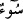
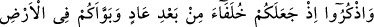
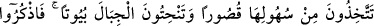
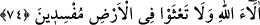

isteselerdi, bu mucizeden faydalanacak olanlar da onlardı.
“Onu bırakın” Böyle yapılması, devenin Allah’ın ayetlerinden bir ayet oluşunun
gereğidir. Bu hususiyeti, ona ilişilmemesini lüzumlu kılıyordu.
“Allah’ın arzından yesin” içsin.” Yani deve, Allah‘ın devesi; yer de Allah’ın yeri.
Bırakın onu, Hicr bölgesinde istediği yerden otlasın. Onu, rahatca otlamaktan
engellemek size yasaktır.”
Burada devenin yemesinden bahsedilip içmesinden hiç söz edilmemesi, yemesinden
bahsedilince zâten içmesinin de anlaşıldığı içindir.
“Sakın ona bir kötülük etmeyin, yoksa sizi acı bir azab yakalar.” Ona kötü niyetle
yaklaşmayın. Allah’ın ayeti olan deveye hürmet ederek ona vurmak, öldürmek veya
başka bir zarar vermek gibi ona kötülük edecek herhangi bir şeye asla teşebbüs etmeyin.
“dedi.”
“
” (kötülük), her türlü eziyeti ifâde eden bir kelimedir.
Bu ifâdede mübâlağa vardır. Çünkü zarar vermenin başlangıcı olan ‘dokunma’ bile
yasaklanmıştır.
Farsça tefsirde şöyle denilmiştir: Azabı hak etmek, devenin zararı dolayısıyla değil,
belki onların mucizeyi gördükten sonra küfürde kalmaları sebebiyledir., Devenin kısır
olması, onların küfürde ileri gitmelerinin delilidir.
Ayetin işârî mânâsı şöyledir: Avam için mucize, kayadan devenin çıkmasıdır. Havas
için mucize kalb taşından, sır devesinin çıkmasıdır. Bu deve mârifetullah emanetini taşır
ve kalıp (beden) beldesinin kuvvet ve hislerine ilâhî vâridât sütü verir. Bu deveyi
bırakın Allah’ın arzından yesin, yani kuds bahçelerinde otlasın ve ünsiyet pınarlarından
içsin. Ona, şeriata muhalefet ve tarikata karşı çıkma kötülükleri ile dokunmayınız.
Yoksa sizi, hakikate ulaşmaktan kesilip uzak kalmanın elem veren azabı yakalar.
74. Düşünün ki, (Allah) Âd kavminden sonra yerlerine sizi getirdi. Ve
yeryüzünde sizi yerleştirdi: Onun düzlüklerinde saraylar yapıyorsunuz, dağlarında
evler yontuyorsunuz. Artık Allah’ın nimetlerini hatırlayın da yeryüzünde fesatçılar
olarak karışıklık çıkarmayın.
“Düşünün ki” Allah, “Âd kavminden sonra sizi onların yerine getirdi” Yani, Allah
Teâlâ’nın sizi Hicr bölgesinde hâkim kıldığı veya Âd kavmini helâk ettikten sonra sizi
onların yerine getirdiği vakti düşünüp hatırlayın.
“ve yeryüzünde” Hicr bölgesinde “sizi yerleştirdi.”
Ebüssuûd Efendi bu cümlenin tefsirinde şöyle der: “Yani, sizin için Hicâz ve Şam